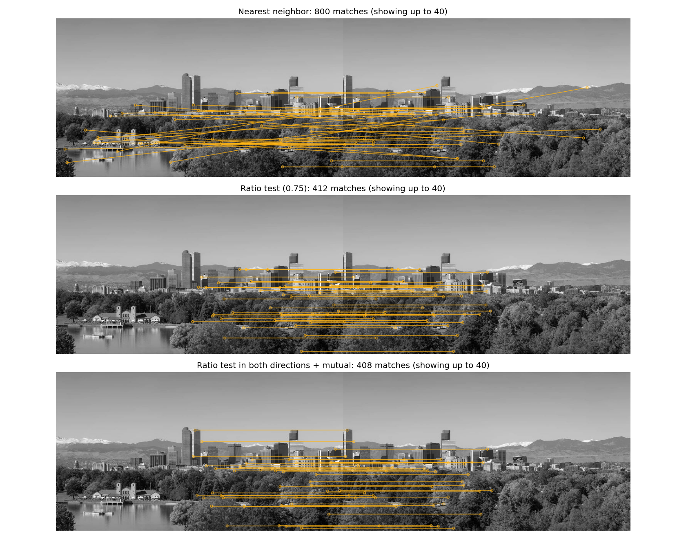

Homework 07: Feature Matching
Total: 5 points
Submission: Gradescope Programming Assignment
Work: Individual
Objective
Find corresponding feature points across images. You will use OpenCV to find nearest descriptors, reject ambiguous matches with the ratio test, and keep matches that agree in both directions. A provided experiment shows how the number and reliability of accepted matches change with the ratio threshold.
Use the course cv Conda environment. You may adapt the lecture examples to the functions below. Do not use generative AI to solve this homework.
Starter files
Download these three files into the same folder:


The images are overlapping grayscale views of the Denver skyline from Lecture 7. Keep the supplied images unchanged.
Complete only these three functions:
ratio_match(descriptors1, descriptors2, ratio)
mutual_matches(matches12, matches21)
match_images(image1, image2, ratio)SIFT extraction, image loading, transformations, match evaluation, and plotting are fully provided. You do not need to reuse your HW06 submission. Leave all provided code unchanged and keep the supplied function names and arguments.
Tools and conventions
- Keep imports to
cv2,numpy,matplotlib, and the standard-library modules. - Use
cv2.BFMatcherwithcv2.NORM_L2andcrossCheck=Falsefor the two-neighbor search in Part 1. - Do not modify input arrays, lists, or match objects. Do not normalize, clip, or otherwise change the provided SIFT descriptors.
- Graded descriptor inputs are finite
float32arrays of shapes(N, D)and(M, D), with the sameD >= 1. SIFT uses 128 values, but small test vectors may use fewer columns. - Graded images are two-dimensional
uint8grayscale in[0, 255], with at least 16 rows and 16 columns. Images can have different dimensions. The loader handles their types. - The ratio threshold satisfies
0 < ratio < 1. Inputs are valid; you do not need to write input-validation code. - Keep the supplied main guard so importing
hw07.pydoes not run its demonstration.
Part 1 — Ratio-test matching
Complete:
def ratio_match(descriptors1, descriptors2, ratio):
...Each descriptor summarizes the appearance around a feature point. For every descriptor in image 1, find its two nearest neighbors among descriptors in image 2. Let their ordinary Euclidean distances be d_best and d_second. Accept the best match only when
\[ d_{\mathrm{best}} < \text{ratio}\,d_{\mathrm{second}}. \]
A distinctive match is substantially closer than its nearest alternative. Two similarly close alternatives indicate ambiguity.
Steps and hints:
- If image 1 has no descriptors, or image 2 has fewer than two descriptors, return
[]. - Create
cv2.BFMatcher(cv2.NORM_L2, crossCheck=False). - Call
knnMatch(descriptors1, descriptors2, k=2)on the matcher. Each group contains up to twocv2.DMatchobjects, in increasing distance order. Skip a group with fewer than two entries. - Use their
.distancevalues in the strict inequality above. - Return a list containing the best
cv2.DMatchfrom each accepted group, in increasing.queryIdxorder.
For a forward match:
| Attribute | Meaning |
|---|---|
queryIdx |
Index of the descriptor/keypoint in image 1 |
trainIdx |
Index of the descriptor/keypoint in image 2 |
distance |
Ordinary Euclidean distance between the descriptors |
Return the original best-match object with its distance unchanged. Multiple queries may select the same target; do not enforce one-to-one matching in this part.
Worked example: A query [0, 0] and targets [1, 0], [4, 0] give distances 1 and 4. The ratio is 0.25, so the first match passes a threshold of 0.75. If the distances were 3 and 4, it would fail: equality does not satisfy the strict inequality.
Important cases to try locally:
- Empty query descriptors: return
[]. - Zero or one target descriptor: return
[]; two neighbors are needed to assess ambiguity. - Two nearest neighbors both at distance zero: reject the match as ambiguous.
- Best distance zero and second distance positive: the match can pass.
- Two equally close neighbors: reject the match.
Use multiplication in the stated test to avoid division by zero. Do not add a small denominator or automatically accept all zero-distance matches. Use ordinary L2 distance, not squared distance: the same numeric threshold has a different meaning for squared distances.
Part 2 — Mutual matching
Complete:
def mutual_matches(matches12, matches21):
...Both inputs have already passed the ratio test. Keep a forward pair i -> j only if the reverse list contains j -> i.
For example:
| Forward pair | Reverse pair available? | Keep? |
|---|---|---|
0 -> 2 |
2 -> 0 |
Yes |
1 -> 0 |
Only 0 -> 2 |
No |
2 -> 1 |
1 -> 2 |
Yes |
Return a new list of the retained forward cv2.DMatch objects in their original forward order. Preserve their distances, and do not change either input list or its objects.
Hints:
- In the reverse list,
queryIdxrefers to image 2 andtrainIdxrefers to image 1. - Build a set of reverse
(queryIdx, trainIdx)pairs. For each forward object, look for its indices in reversed order. - You do not need to recompute descriptor distances.
- Either list can be empty. In that case, return
[]. - Input lists need not be sorted. Each list contains at most one match per query, but several queries can share a target.
- Compare index pairs, not match-object identity or equality of forward/reverse distances. Return the forward object even when the reverse object’s recorded distance differs.
The requirement is agreement between two ratio-filtered lists. Basic OpenCV nearest-neighbor cross-check alone does not enforce acceptance by both ratio tests.
Part 3 — Connect the pipeline
Complete:
def match_images(image1, image2, ratio):
...The provided extract_sift(image) helper returns (keypoints, descriptors). It uses OpenCV SIFT with a default feature limit of 800 and returns an empty (0, 128) descriptor array when no features are found.
Connect the stages in this order:
- Call
extract_sift(image1)andextract_sift(image2)using their default settings. - Call
ratio_match(descriptors1, descriptors2, ratio)to obtain the forward list. - Call
ratio_match(descriptors2, descriptors1, ratio)to obtain the reverse list. - Pass those lists, in forward/reverse order, to
mutual_matches(). - Return
(keypoints1, keypoints2, forward_matches, mutual_matches)in that order.
Use the supplied images and ratio; do not hard-code the example inputs or threshold. Preserve the original keypoint lists and their order. Descriptor row i belongs to keypoint i, so the match indices refer directly to these lists. The function should also handle images with no features, using the empty-input behavior described above.
Run and inspect the results
conda activate cv
python hw07.py --output-dir resultsOr specify the two images:
python hw07.py skyline_left.png skyline_right.png --output-dir resultsThe provided driver produces:
hw07_matches.png: nearest-neighbor, ratio-filtered, and mutual matches for the overlapping views.hw07_transformations.png: mutual matches between the left image and a version rotated by 20 degrees and scaled by 0.80, at ratio thresholds 0.60, 0.75, and 0.90.hw07_metrics.csv: match counts and positional-consistency measurements for the transformed pair. The table is also printed in the terminal.

Full-size matching stages · Rotation and scale comparison · Reference measurements


The figures display up to 40 matches, sampled across descriptor distances; titles report the total. The displayed subset can change as filtering removes matches. OpenCV versions may produce slightly different keypoints, counts, and measurements. Fonts, plot pixels, and fixed reference counts are not grading targets.
Guided experiment — How reliable are the matches?
All evaluation code is provided. Because we created the transformed image ourselves, we know where each original point should move. The evaluator compares that predicted location with the target keypoint:
- Accepted: all matches returned by the selected method.
- Evaluated: accepted matches whose source point projects inside the target image, within the shared visible region.
- Consistent: evaluated matches whose positional error is at most 3 pixels in the target image.
- Percent:
100 * consistent / evaluated; reported asn/awhen no matches can be evaluated.
The percentage applies to evaluated matches, not automatically every accepted match. These are positional-consistency measurements, not recall and not a proof of physical identity. The known transformation is used only by the supplied evaluator, never to select matches in your functions.
Inspect the raw nearest-neighbor result and the ratio/mutual results at each threshold. Consider:
- Does increasing the ratio threshold always improve matching quality?
- Can a method retain fewer matches but a higher percentage of consistent ones?
- Which correspondences disappear when both directions must agree?
- Why can repeated windows or similar roof patterns still cause mistakes?
No written answers, additional functions, or panorama stitching are required.
What to submit
Submit exactly one file, hw07.py, to Gradescope. Do not submit images, figures, CSV files, or a notebook.
Submission limit
You may make at most 5 valid Gradescope submissions. Submissions 1–5 are graded normally; submission 6 and every later valid submission receive zero points for that submission. A platform infrastructure failure marked as an autograder error does not count. Errors in your submitted code do count.
Grading
HW07 is worth 5 points and is fully autograded: 2.5 points for ratio-test matching, 2 points for mutual matching, and 0.5 points for connecting the pipeline. Across these tasks, 1 point comes from public tests and 4 points from private tests.
Matching functions are tested independently on supplied descriptors and match lists. The public pipeline-composition test substitutes correct helper outputs, so unfinished earlier functions do not prevent composition credit. A small private portion checks the full pipeline on another image pair. Private groups award partial credit for individual checks.
A public summary reports how many of the seven private test groups passed completely. Individual private results, partial scores, and feedback appear after the Gradescope late due date. Passing public tests does not guarantee full credit. The provided evaluation and plotting code are not separate scored tasks.